🗼 도쿄 67건
팝업스토어 · 40
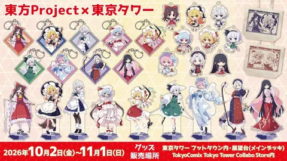
동방 Project × 도쿄타워10/2(금) ~ 11/1(일)📍 도쿄타워 풋타운·메인데크 (TokyoComix)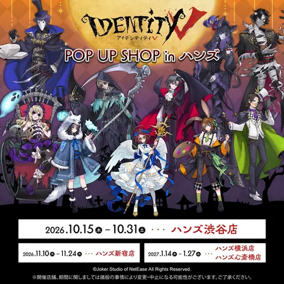
제5인격 팝업숍 in 핸즈 (시부야)10/15(목) ~ 10/31(토)📍 핸즈 시부야점🎌TV 애니메이션 『얼음의 성벽』 POP UP SHOP (신주쿠 마루이 아넥스 7층)10/21(수) ~ 11/3(화)📍 신주쿠 마루이 아넥스 7층Fallout mini Collection 팝업 (이케부쿠로 파르코)10/22(목) ~ 11/3(화)📍 INFOLENS GEEK SHOP 이케부쿠로 파르코점 (본관 6층)Helluva Boss POP UP STORE (선샤인시티 알타)10/22(목) ~ 11/3(화)📍 선샤인시티 알타 1층 이벤트 스페이스 (이케부쿠로)TV애니 「힘내라! 나카무라 군!!」 POP UP SHOP in HMV (HMV&BOOKS SHIBUYA)10/23(금) ~ 11/1(일)📍 HMV&BOOKS SHIBUYA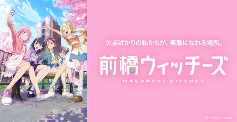
마에바시 위치즈 큐루에모♡저지 메이드 POP UP SHOP (시부야)10/23(금) ~ 11/8(일)📍 도쿄 애니메 센터 in DNP PLAZA SHIBUYA (시부야 MODI 2층)뿌요뿌요 × 하피단V POPUP STORE (도쿄)10/23(금) ~ 11/5(목)📍 도쿄역 이치방가이 도쿄 캐릭터 스트리트 B1F (G계단 아래 왜건)소드 아트 온라인 결혼기념일 팝업스토어 (신주쿠)10/23(금) ~ 11/3(화)📍 Annivroad by Bushiroad Creative Store (신주쿠 마루이 아넥스 2층)아오의 하코 캐주얼 코디 팝업 (SHIBUYA109 시부야)10/23(금) ~ 11/8(일)📍 SHIBUYA109 시부야점 8층 WALLMA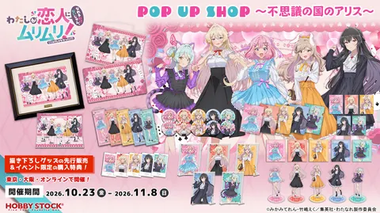
와타나레 「이상한 나라의 앨리스」 팝업 (아키하바라)10/23(금) ~ 11/8(일)📍 볼크스 아키하바라 호비 천국2 6층은혼 POP UP SHOP in 도쿄 캐릭터 스트리트 (eeo · 도쿄역)10/23(금) ~ 11/5(목)📍 도쿄역 이치방가이 지하 1층 도쿄 캐릭터 스트리트 F계단 아래 왜건주술회전 PLAZA 시부야 로프트10/23(금) ~ 11/10(화)📍 시부야 로프트 6층 아트&컬처 플로어 포럼A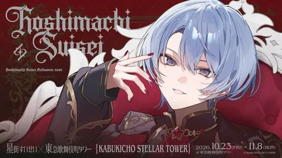
호시마치 스이세이×도큐 가부키초 타워 『KABUKICHO STELLAR TOWER』 (신주쿠)10/23(금) ~ 11/8(일)📍 도큐 가부키초 타워 (굿즈: 3층 namco TOKYO)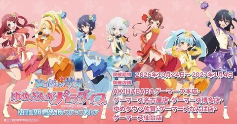
극장판 『좀비랜드 사가 유메긴가 파라다이스』 개봉 1주년 기념 팝업 스토어 (AKIHABARA 게이머즈 본점)10/24(토) ~ 11/8(일)📍 AKIHABARA 게이머즈 본점마법소녀의 마녀재판 × GiGO 팝업 (아키하바라)10/24(토) ~ 11/8(일)📍 GiGO 아키하바라 5호관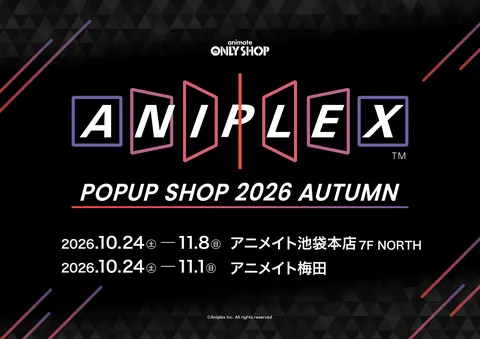
애니플렉스 팝업숍 2026 가을 (이케부쿠로)10/24(토) ~ 11/8(일)📍 애니메이트 이케부쿠로 본점 7F NORTH지구방위군 POP UP SHOP10/24(토) ~ 11/23(월)📍 반다이남코 Cross Store 도쿄 (이케부쿠로 선샤인시티 월드임포트마트 3층)치이카와 포켓 POP UP STORE 제4탄 (이케부쿠로 PARCO)10/24(토) ~ 11/23(월)📍 이케부쿠로 PARCO 본관 6F 0% IKEBUKURO문호 스트레이독스 POP UP (기노쿠니야 서점 신주쿠 본점)10/27(화) ~ 11/10(화)📍 기노쿠니야 서점 신주쿠 본점 본관 1층 THE ENTRANCE시로탄 후왓리 스토어 팝업 (JR 이케부쿠로역)10/27(화) ~ 11/9(월)📍 JR 이케부쿠로역 남쪽 개찰구 밖 이벤트 스페이스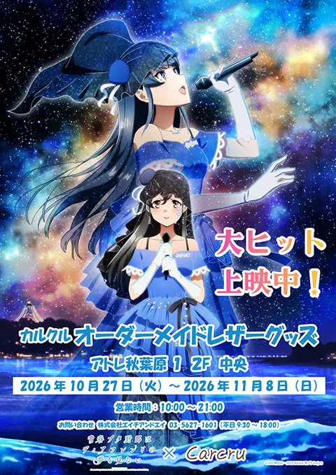
청춘 돼지는 디어 프렌드의 꿈을 꾸지 않는다 POP UP 숍 + 오더메이드 레더굿즈 수주회10/27(화) ~ 11/8(일)📍 아토레 아키하바라1 2층 중앙크록스×체인소맨 콜라보 + atmos 이케부쿠로 팝업10/27(화)📍 atmos 이케부쿠로점THE IDOLM@STER SideM × DAIMARU MATSUZAKAYA 팝업 (다이마루 도쿄점)10/28(수) ~ 11/10(화)📍 다이마루 도쿄점 3층 이벤트 스페이스마법기사 레이어스 POP UP SHOP (이케부쿠로 스키마 스토어 · eeo)10/28(수) ~ 11/10(화)📍 JR 이케부쿠로역 지하 중앙통로 중앙개찰구 앞 이케부쿠로 스키마 스토어스틸 볼 런 죠죠의 기묘한 모험 × NTT 도코모 팝업 (타워레코드 시부야)10/28(수) ~ 11/8(일)📍 타워레코드 시부야점 4층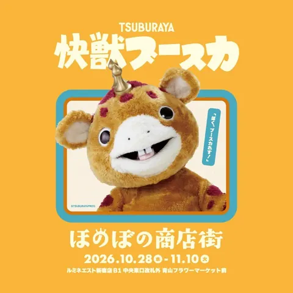
쾌수 부스카 「호노보노 상점가」 POP UP (60주년)10/28(수) ~ 11/10(화)📍 루미네 에스트 신주쿠 B1 중앙동쪽 개찰구 밖 아오야마 플라워 마켓 앞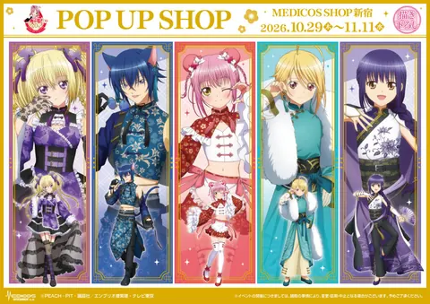
캐릭캐릭 체인지 (슈고캐라!) POP UP SHOP (MEDICOS SHOP 신주쿠)10/29(목) ~ 11/11(수)📍 MEDICOS SHOP 신주쿠 (신주쿠 마루이 아넥스 2층)TV 애니메이션 『한밤중 하트 튠』 POP UP SHOP (AKIBA 컬처즈 ZONE 4층 카르팝)10/30(금) ~ 11/8(일)📍 AKIBA 컬처즈 ZONE 4층 카르팝나루토 질풍전 POP UP SHOP (도쿄 캐릭터 스트리트 · eeo)10/30(금) ~ 11/12(목)📍 도쿄역 이치방가이 B1 도쿄 캐릭터 스트리트 K계단 아래 왜건도원암귀 SPECIAL POPUP at 베이스야드 도쿄 (도쿄)10/30(금) ~ 11/30(월)📍 베이스야드 도쿄 하라주쿠점·루미네 에스트 신주쿠점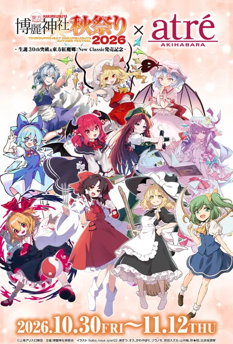
동방 Project 하쿠레이 신사 가을 축제 2026 팝업 (아트레 아키하바라)10/30(금) ~ 11/12(목)📍 아트레 아키하바라 1·2층 이벤트 스페이스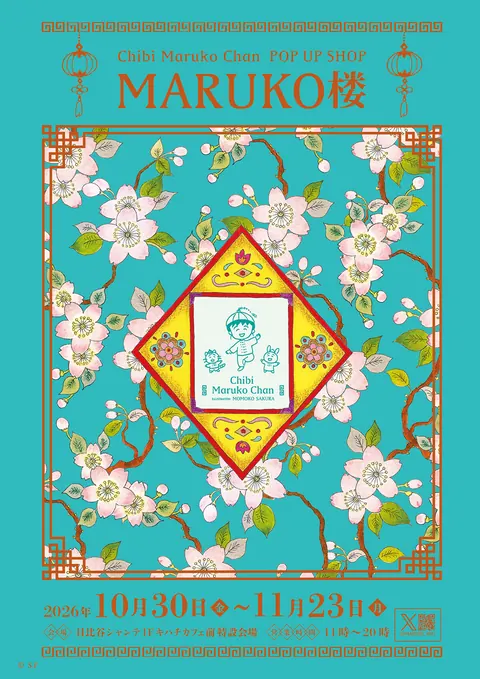
마루코는 아홉살 팝업스토어 「MARUKO楼」 (히비야)10/30(금) ~ 11/23(월)📍 히비야 샹테 1층 키하치 카페 앞 특설 회장마쓰켄 애니메 팝업스토어 (시부야)10/30(금) ~ 11/8(일)📍 도쿄 애니메 센터 in DNP PLAZA SHIBUYA (시부야 MODI 2층)유희왕 VRAINS POP UP SHOP (eeo POP-UP STORE)10/30(금) ~ 11/11(수)📍 eeo POP-UP STORE (이케부쿠로)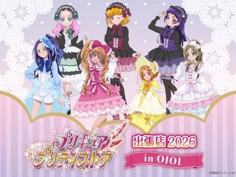
프리큐어 프리티 스토어 출장점 (신주쿠 마루이 아넥스)10/30(금) ~ 11/15(일)📍 신주쿠 마루이 아넥스【최애의 아이】 × TOPPA!!! BASE AKIBA (에큐트 아키하바라)10/31(토) ~ 11/8(일)📍 에큐트 아키하바라 (JR 아키하바라역 1층 개찰구 안)유유백서 팝업숍10/31(토) ~ 11/12(목)📍 eeo Store 이케부쿠로 본점케로로 중사☆ 캐릭터 팝 스토어10/31(토) ~ 11/23(월)📍 반다이남코 Cross Store 아트레 아키하바라점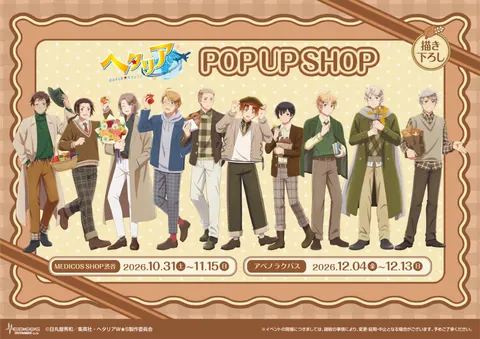
헤타리아 World★Stars POP UP SHOP 「오텀 퍼레이드」10/31(토) ~ 11/15(일)📍 MEDICOS SHOP 시부야 (MAGNET by SHIBUYA109 5층)콜라보카페 · 19
체인소맨 킷사 (체인소맨 콜라보 카페)10/1(목) ~ 11/8(일)📍 BOX cafe&space 루미네 에스트 신주쿠 1호점 (8층)키타로 탄생: 게게게의 수수께끼 × and GALLERY 콜라보 카페10/3(토) ~ 10/31(토)📍 and GALLERY 유라쿠초점
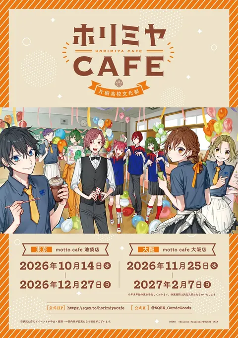
호리미야 CAFE 가타기리 고교 문화제 (이케부쿠로)10/14(수) ~ 12/27(일)📍 motto cafe 이케부쿠로점귀멸의 칼날 '귀습래 재래 2026' (ufotable DINING 외)10/15(목) ~ 12/16(수)📍 ufotable DINING·DINING-HIROMA-·MOCKTAIL BAR GINZA가면라이더 55th ANNIVERSARY CAFE in SWEETS PARADISE (신주쿠)10/16(금) ~ 11/15(일)📍 DISH UP (신주쿠 마루이 아넥스 8층)나의 히어로 아카데미아 카페 WE ARE HERO HOLICS10/16(금) ~ 12/20(일)📍 BOX cafe&space 큐플라자 하라주쿠점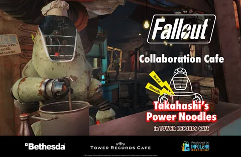
Fallout × TOWER RECORDS CAFE 콜라보카페 (오모테산도)10/22(목) ~ 11/8(일)📍 TOWER RECORDS CAFE 오모테산도점 (진구마에 6-3-9 2층)고질라-0.0 × 클래퍼스 다이너 (그랜드 시네마 선샤인 이케부쿠로)10/23(금)📍 클래퍼스 다이너 (그랜드 시네마 선샤인 이케부쿠로 5층)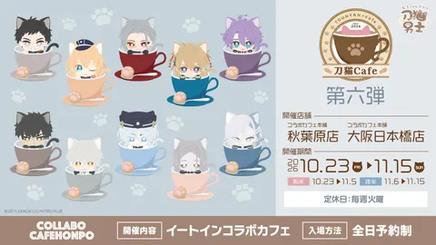
도검난무 「도묘남사」 × 콜라보카페 혼포 제6탄 (아키하바라점)10/23(금) ~ 11/15(일)📍 콜라보카페 혼포 아키하바라점 (外神田4-3-10 シャトンビル2F)영웅전설 궤적 시리즈 × ORBcafe 콜라보 카페10/23(금) ~ 11/16(월)📍 ORBcafe 신주쿠 히가시구치 네코점 (크로스 신주쿠 빌딩 B1F)다이아의 에이스 act II Second Season eeo Cafe (이케부쿠로)10/24(토) ~ 11/5(목)📍 eeo Cafe (도시마구 미나미이케부쿠로 1-9-21 JK7 1층)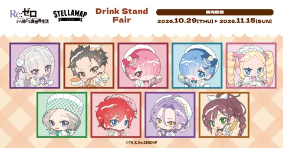
Re:제로부터 시작하는 이세계 생활 × STELLAMAP Cafe 드링크 스탠드10/29(목) ~ 11/15(일)📍 아니메가×소프맵 AKIBA 어뮤즈먼트관 6F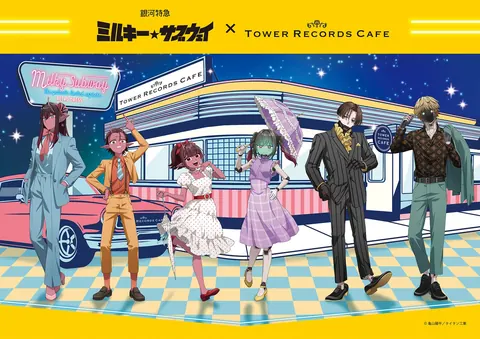
은하특급 밀키☆서브웨이 × TOWER RECORDS CAFE (시부야점)10/29(목) ~ 11/22(일)📍 타워레코드 시부야점 2F TOWER RECORDS CAFE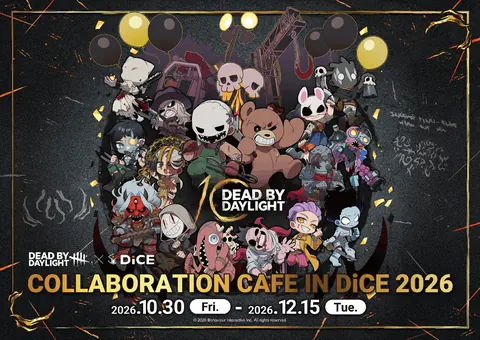
데드 바이 데이라이트 × DiCE 콜라보 카페10/30(금) ~ 12/15(화)📍 넷카페 DiCE 이케부쿠로점 (히가시이케부쿠로) 외 (삿포로·센다이·오미야·지유가오카·난바)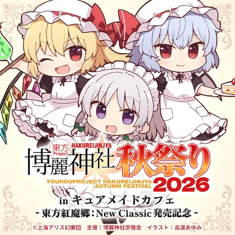
동방 Project 하쿠레이 신사 가을 축제 2026 콜라보 카페 (큐어 메이드 카페 아키하바라)10/30(금) ~ 11/15(일)📍 큐어 메이드 카페 (아키하바라 오노덴 빌딩 4층)명조 × 애니메이트 그라테 제3탄 (도쿄)10/30(금) ~ 11/29(일)📍 애니메이트 그라테 이케부쿠로 본점·아키하바라 ANNEX·애니메이트 거리점·시부야·기치조지 파르코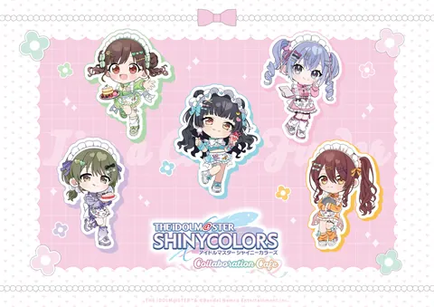
아이돌마스터 샤이니 컬러즈 × 스위츠 파라다이스 (COLLABO PARADISE 신주쿠 마루이 아넥스점)10/30(금) ~ 11/24(화)📍 COLLABO PARADISE 신주쿠 마루이 아넥스점약사의 혼잣말 × 스위츠 파라다이스 제3탄 (SoLaDo 하라주쿠점)10/30(금) ~ 11/23(월)📍 스위츠 파라다이스 SoLaDo 하라주쿠점페이트/그랜드 오더 콜라보 레스토랑 「영령들의 만찬회」10/31(토) ~ 12/20(일)📍 선샤인시티 프린스호텔 B1 「IKEPRI CANVAS」전시·행사 · 5
🎌PERSONA Memoria (반다이남코 Cross Store 도쿄)10/9(금) ~ 12/6(일)📍 반다이남코 Cross Store 도쿄 (이케부쿠로 선샤인시티)
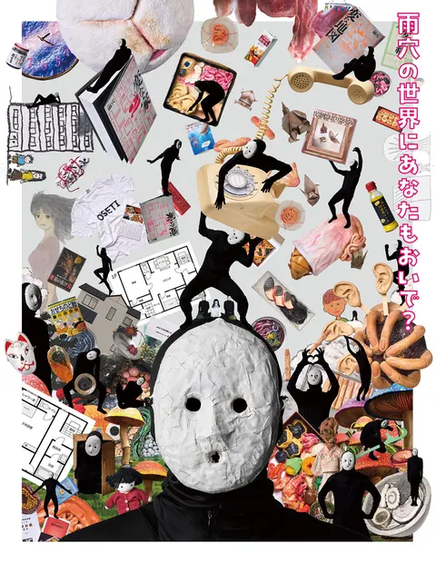
우케쓰의 이상한 세계전。 (데라다 창고 G1빌딩)10/23(금) ~ 1/17(일)📍 데라다 창고 G1빌딩 (시나가와구 히가시시나가와)메이드 인 어비스전 (전기)10/24(토) ~ 11/11(수)📍 세이부 이케부쿠로 본점 서적관 1F·B1야마부키 축제 in NAMJATOWN (신 테니스의 왕자)10/27(화) ~ 11/23(월)📍 난자타운 (이케부쿠로 선샤인시티)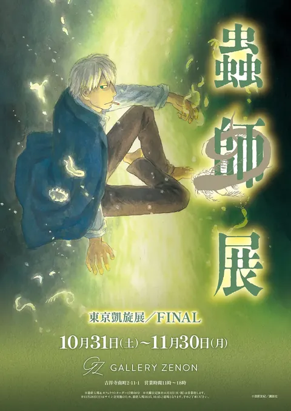
충사전 도쿄 개선전/FINAL (키치조지 · 갤러리 제논)10/31(토) ~ 11/30(월)📍 GALLERY ZENON (키치조지)축제 · 2
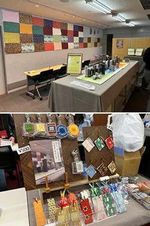
제66회 간다 헌책 축제10/23(금) ~ 11/1(일)📍 진보초 고서점가 (야스쿠니도리 일대)다카하타 후도존 국화 축제10/28(수) ~ 11/17(화)📍 다카하타 후도존 (히노시)플리마켓 · 1
🏯 오사카 23건
팝업스토어 · 10
🎌히로아카 애니 10주년 bones store 팝업 (우메다 PACKS)10/9(금) ~ 11/1(일)📍 우메다 PACKS (애니메이트 우메다점 안)치이카와·모후샌드 GPSBOX & 키라멧코 팝업스토어 (다이마루 우메다)10/21(수) ~ 11/3(화)📍 다이마루 우메다점 1층 동쪽 이벤트 스페이스와타나레 「이상한 나라의 앨리스」 팝업 (오사카)10/23(금) ~ 11/8(일)📍 볼크스 오사카 쇼룸 1층「チ。 지구의 운동에 대하여」 팝업 (오사카 아베노)10/24(토) ~ 11/1(일)📍 아베노 Hoop 4층 아베노 라쿠바스도원암귀 SPECIAL POPUP at 베이스야드 도쿄 (오사카)10/30(금) ~ 11/30(월)📍 베이스야드 도쿄 루쿠아 오사카점치이카와 포켓 POP UP STORE 제4탄 (덴노지 미오)10/30(금) ~ 11/15(일)📍 덴노지 미오 본관 6F 미오라보코릴라쿠마 토끼 POP-UP SHOP10/30(금) ~ 11/8(일)📍 신사이바시 PARCO 9층 이벤트 스페이스【최애의 아이】 × TOPPA!!! BASE UMEKITA (PLAT UMEKITA)10/31(토) ~ 11/5(목)📍 PLAT UMEKITA (그랑 그린 오사카)러브라이브! 하스노소라 팝업스토어 (난바 로프트)10/31(토) ~ 11/15(일)📍 난바 파크스 5층 난바 로프트 버라이어티 잡화 매장사이버펑크: 엣지러너 2 POP UP (난바 마루이)10/31(토) ~ 11/15(일)📍 난바 마루이 3층 이벤트 스페이스
콜라보카페 · 8
블리치 천년혈전편 콜라보 카페 (신사이바시 PARCO)10/2(금) ~ 11/9(월)📍 THE GUEST CAFE BY PARCO 신사이바시 PARCO점 (신사이바시 PARCO 6층)🎌거짓말쟁이! 고쿠오 군 × 카시배틀 콜라보카페 (CAFE EPIC TALE)10/21(수) ~ 11/15(일)📍 CAFE EPIC TALE (닛폰바시 エグゼレジデンスタワー 1F)도검난무 「도묘남사」 × 콜라보카페 혼포 제6탄 (오사카 닛폰바시점)10/23(금) ~ 11/15(일)📍 콜라보카페 혼포 오사카 닛폰바시점 (浪速区日本橋西1-1-18 安田西ビル1F)
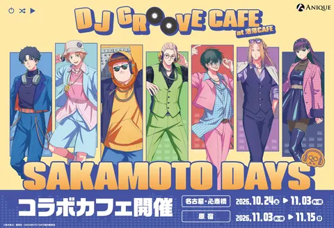
SAKAMOTO DAYS DJ GROOVE CAFE (샤레 CAFE 신사이바시 BIGSTEP점)10/24(토) ~ 11/3(화)📍 샤레 CAFE 신사이바시 BIGSTEP점 (心斎橋ビッグステップ 3F)은하특급 밀키☆서브웨이 × TOWER RECORDS CAFE (오사카 스테이션시티점)10/29(목) ~ 11/15(일)📍 오사카 스테이션시티 사우스게이트빌딩 15F TOWER RECORDS CAFE명조 × 애니메이트 그라테 제3탄 (오사카)10/30(금) ~ 11/29(일)📍 애니메이트 그라테 오사카 닛폰바시·우메다아이돌마스터 샤이니 컬러즈 × 스위츠 파라다이스 (COLLABO PARADISE 아베노 하루카스점)10/30(금) ~ 11/24(화)📍 COLLABO PARADISE 아베노 하루카스점 (긴테쓰 본점 윙관 6층)약사의 혼잣말 × 스위츠 파라다이스 제3탄 (오사카 덴노지 미오점)10/30(금) ~ 11/23(월)📍 스위츠 파라다이스 덴노지 미오점전시·행사 · 5
🎌문호 스트레이독스 ART & DESIGN EXHIBITION (문스독 · 오사카)10/2(금) ~ 11/2(월)📍 Space Gratus (애니메이트 오사카 닛폰바시)주술회전 월드 오사카 (JUJUTSU KAISEN WORLD · 주술 팝업)10/9(금) ~ 11/23(월)📍 반다이남코 Cross Store 오사카 우메다 (HEP FIVE)30주년 기념전 「ALL OF EVANGELION」 오사카 (히라카타 파크)10/18(일) ~ 1/11(월)📍 히라카타 파크 이벤트 홀 (입원 없이 입장 가능)나의 히어로 아카데미아 × 우메다 스카이빌딩 공중정원 전망대10/30(금) ~ 11/30(월)📍 우메다 스카이빌딩 공중정원 전망대
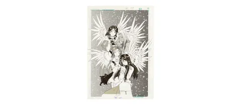
데뷔 40주년 기념 후지시마 코스케 원화전 (오사카)10/30(금) ~ 11/15(일)📍 난바 마루이 5층 이벤트 스페이스🍜 후쿠오카 7건
팝업스토어 · 3
치이카와 팝업스토어 (후쿠오카 미쓰코시)10/16(금) ~ 11/3(화)📍 후쿠오카 미쓰코시 9층 미쓰코시 갤러리
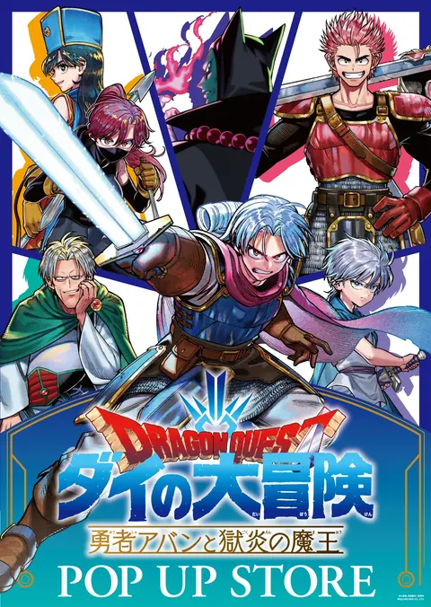
드래곤 퀘스트 다이의 대모험 용사 아반과 옥염의 마왕 팝업스토어 (하카타 마루이)10/31(토) ~ 11/8(일)📍 하카타 마루이 7층 이벤트 스페이스소녀☆가극 레뷰 스타라이트 9주년 캐릭팝스토어 (하카타)10/31(토) ~ 11/22(일)📍 캐널시티 하카타 사우스빌딩 B1 반다이남코 Cross Store 하카타콜라보카페 · 1
전시·행사 · 3
🗾 전국 32건
쿠지 · 12
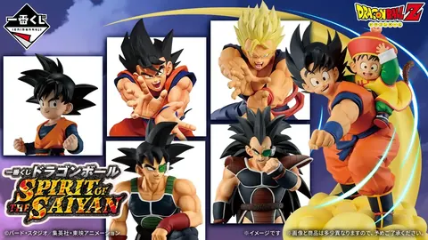
이치방쿠지 드래곤볼 SPIRIT OF THE SAIYAN10/17(토)📍 전국 판매처 (편의점·서점 등)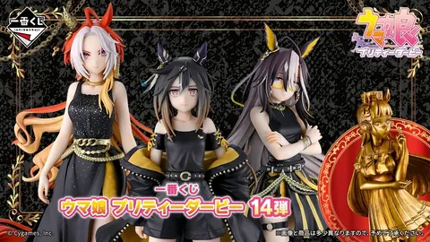
이치방쿠지 우마무스메 프리티 더비 14탄10/17(토)📍 전국 판매처 (편의점·서점 등)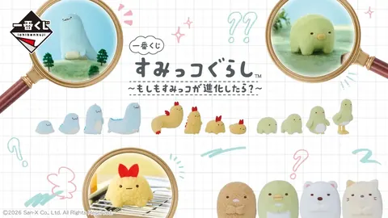
이치방쿠지 스밋코구라시 ~스밋코가 진화한다면?~10/24(토)📍 전국 판매처 (편의점·서점 등)이치방쿠지 오란고교 호스트부 ~20th Anniversary~10/24(토)📍 전국 판매처 (로손·서점·하비숍 등) · 이치방쿠지 ONLINE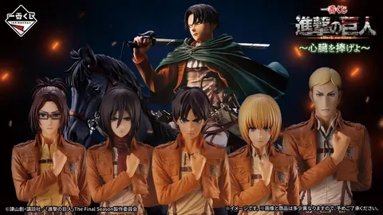
이치방쿠지 진격의 거인 ~심장을 바쳐라~10/24(토)📍 전국 판매처 (편의점·서점 등)이치방쿠지 카구라바치10/24(토)📍 전국 판매처 (편의점·서점 등)이치방쿠지 NARUTO -나루토- 질풍전 히단·카쿠즈 편10/26(월)📍 이치방쿠지 공식 숍 · 이치방쿠지 ONLINE (편의점 판매 없음)이치방쿠지 (초콧토) mojojojo10/28(수)📍 일번쿠지 ONLINE·공식숍 한정이치방쿠지 원피스 -하늘에 울리는 "섬의 노랫소리"-10/29(목)📍 전국 판매처 (편의점·서점 등)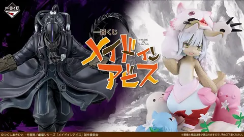
이치방쿠지 메이드 인 어비스10/31(토)📍 전국 판매처 (미니스톱·서점·하비숍 등) · 이치방쿠지 ONLINE이치방쿠지 문구와 함께 ~작아져 버렸다!?~10/31(토)📍 전국 판매처 (편의점·서점 등)이치방쿠지 페이트/그랜드 오더 ~칼데아 픽업 메모리~10/31(토)📍 전국 판매처 (편의점·서점 등)가챠 · 12
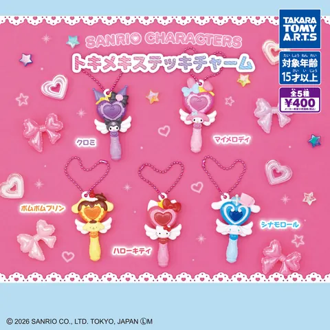
산리오 캐릭터즈 두근두근 스틱 참 (가챠)10월 26일 주 발매 (지역·매장별 상이)📍 전국 판매처 (가챠 코너 등)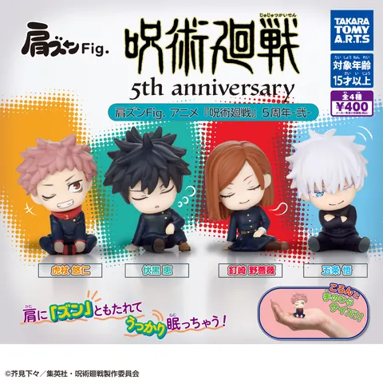
카타즌 Fig. 주술회전 애니 5주년 -弍- (가챠)10월 26일 주 발매 (지역·매장별 상이)📍 전국 판매처 (가챠 코너 등)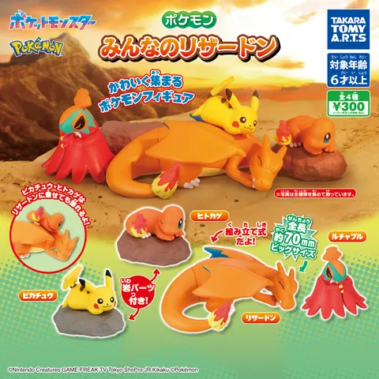
포켓몬 모두의 리자몽 (가챠)10월 26일 주 발매 (지역·매장별 상이)📍 전국 판매처 (가챠 코너 등)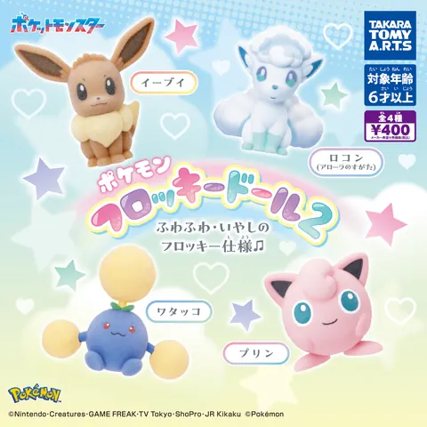
포켓몬 플로키 돌 2 (가챠)10월 26일 주 발매 (지역·매장별 상이)📍 전국 판매처 (가챠 코너 등)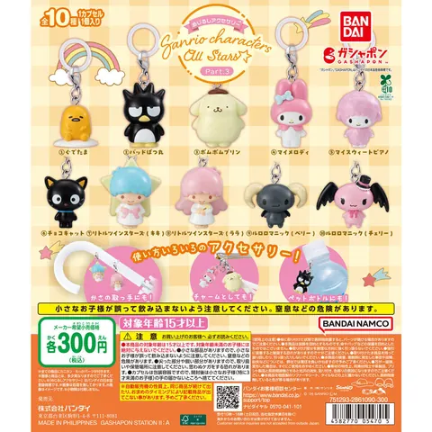
메지루시 액세서리 산리오 캐릭터즈 올스타즈 Part.3 (가챠)10월 5째 주 발매 (지역·매장별 상이)📍 전국 판매처 (가챠 코너 등)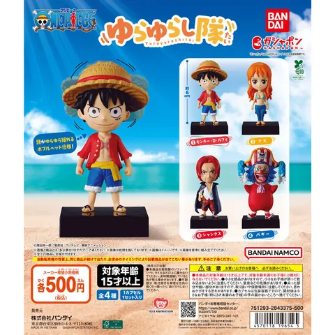
원피스 유라유라시타이 (가챠)10월 5째 주 발매 (지역·매장별 상이)📍 전국 판매처 (가챠 코너 등)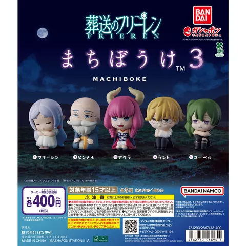
장송의 프리렌 마치보우케 3 (가챠)10월 5째 주 발매 (지역·매장별 상이)📍 전국 판매처 (가챠 코너 등)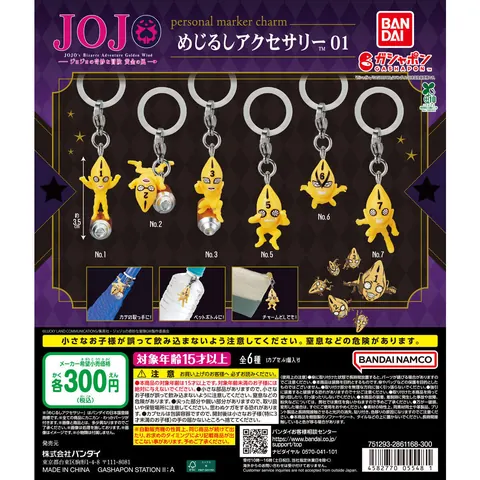
죠죠의 기묘한 모험 황금의 바람 메지루시 액세서리 01 (가챠)10월 5째 주 발매 (지역·매장별 상이)📍 전국 판매처 (가챠 코너 등)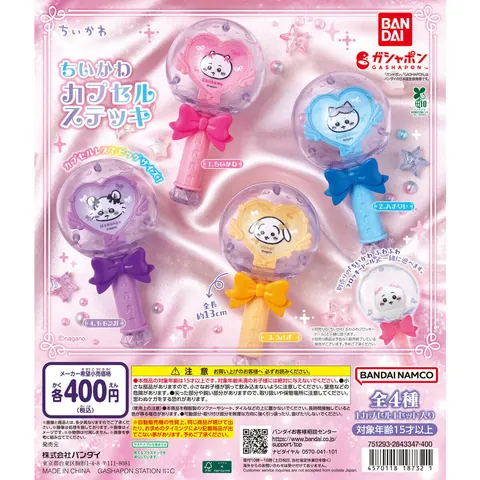
치이카와 캡슐 스틱 (가챠)10월 5째 주 발매 (지역·매장별 상이)📍 전국 판매처 (가챠 코너 등)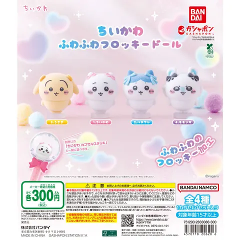
치이카와 후와후와 플로키 돌 (가챠)10월 5째 주 발매 (지역·매장별 상이)📍 전국 판매처 (가챠 코너 등)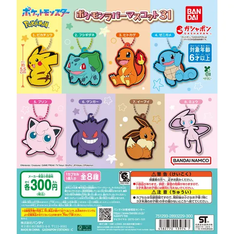
포켓몬 러버 마스코트 31 (가챠)10월 5째 주 발매 (지역·매장별 상이)📍 전국 판매처 (가챠 코너 등)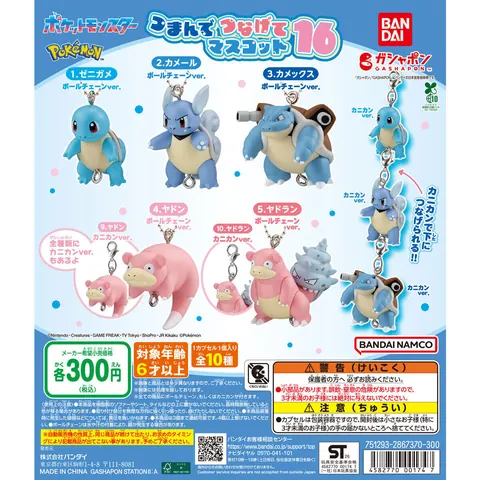
포켓몬 츠만데 츠나게테 마스코트 16 (가챠)10월 5째 주 발매 (지역·매장별 상이)📍 전국 판매처 (가챠 코너 등)잡지 부록 · 8
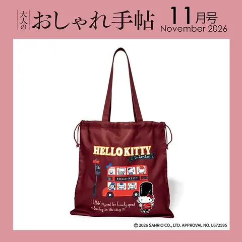
오토나노 오샤레테초 11월호 부록 ― 헬로키티 자수 복주머니 토트10/7(수)📍 서점·편의점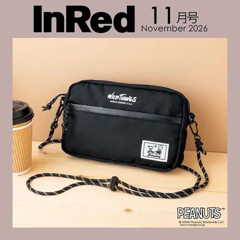
인레드 11월호 부록 ― 피너츠×와일드띵스 숄더백10/7(수)📍 서점·편의점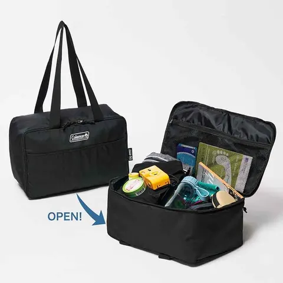
모노맥스 11월호 부록 ― 콜맨 풀오픈 2WAY 가방10/9(금)📍 서점·편의점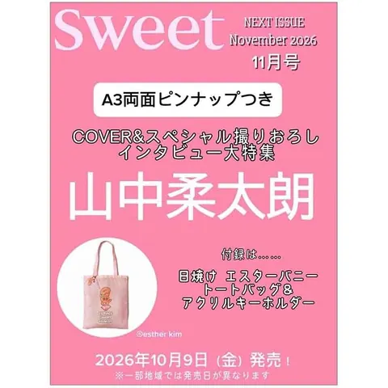
스위트 11월호 부록 ― 하와이 한정 에스터버니 토트백&키홀더10/9(금)📍 서점·편의점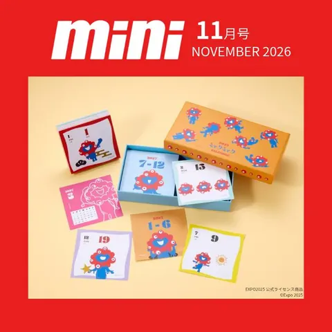
미니 11월호 부록 ― 먀쿠먀쿠 365일 일력10/15(목)📍 서점·편의점린네루 12월호 부록 ― 무민 나무 스탬프 세트10/20(화)📍 서점·편의점글로우 12월호 부록 ― 아쿠아스큐텀 175주년 다이어리10/28(수)📍 서점·편의점오토나뮤즈 12월호 부록 ― 그로구 디자인 장바구니 가방10/28(수)📍 서점·편의점일정·가격은 바뀔 수 있어요. 방문 전 각 행사 공식 사이트를 꼭 확인해 주세요. 11월 모아보기 →